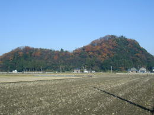
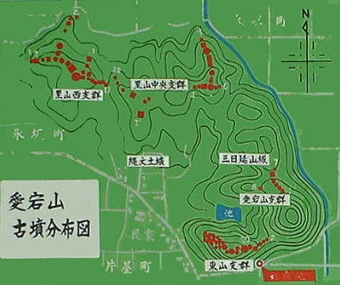
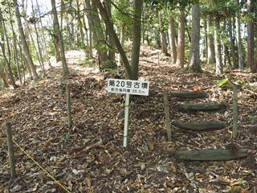
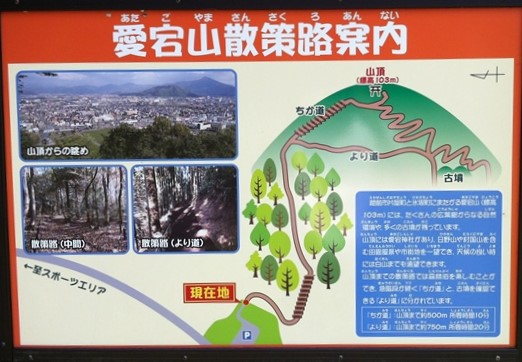
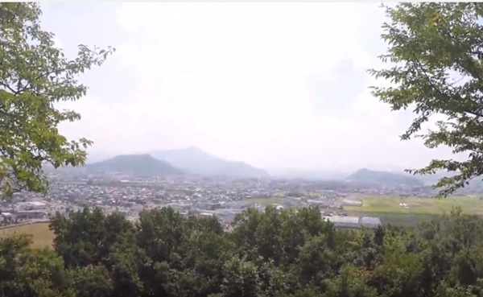

た ： たくさんの 古墳が近くに 愛宕山古墳群
一言でいうと？
愛宕山のたくさんの古墳を合わせてよんだもの

愛宕山(あたごやま)はこれまでに前方後円墳(ぜんぽうこうえんふん)２基を含む78基の古墳が確認され、これを合わせて愛宕山古墳群(あたごやまこふんぐん)といいます。
古墳とは？
昔の王様のお墓
日本は3世紀後半から約400年間ほど、土を高く盛り上げて丘のようにしたお墓が多くつくられました。このようなお墓を「古墳(こふん)」といいます。
愛宕山近くの吉野小学校では、実際に愛宕山に登って古墳を見に行ったり、寝っ転がってみたりする授業があるそうで、学校の中には資料室もあります。これほど近くに古墳がある学校は珍しいそうです。
愛宕山の古墳は？
様々な時代の古墳がたくさん！
東山支群、愛宕山支郡、里山西支郡、里山中央支郡の4市郡で構成されています。縄文時代、古墳時代、中世の遺跡もあるそうです。
一番大きい前方後円墳は東山支郡にあります。第20号古墳という看板が立っています。
登り方は？
丹南総合公園の脇から
愛宕山は丹南総合公園の脇から登れるようになっています(遊具がある公園の脇・柵がしてありますが簡単に開けられます)。
近道コース(10分500ｍ)とより道コース(20分750ｍ)がありますが、より道コースだと途中に古墳群があります。
▼愛宕山マップ
頂上からは日野山や越前市内が見渡せます。

かるたの絵の参考にしようと、吉野小学校に行って資料室を見せていただきました！先生からもいろいろとお話が聞けたのですが、前方後円墳は、王様が寝っ転がって、起き上がったときに領地が見渡せる方向に作られているそうですよ！知っていましたか？